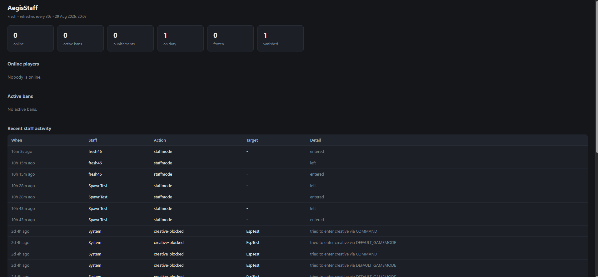

AegisStaff
The whole staff side of a server in one plugin. Punishments with an escalation ladder, staff mode, vanish, freeze, reports, notes, an audit log of what staff themselves have been doing, Discord feeds and a local web dashboard.
Java 21Paper 1.21124 classes SQLite or MySQLzero dependenciesv3.0.0
It's the largest thing on this site. Forty-odd commands, five staff ranks, its own database layer, and a set of rules designed around the assumption that the people using it can also abuse it.
The five ranks
Ranks stack downward — each one includes everything below it, and a person gets
exactly one. They're composed in LuckPerms rather than hardcoded, because every single feature is
its own permission node and every node defaults to false. Nothing is implicit, and a
server that wants a different shape of team can build one.
| Rank | Gains |
|---|---|
| Helper | Chat moderation and reports. Warn, kick, mute, tempmute, the punish GUI, player history, notes, staff chat, staff mode. No inspection tools and no bans |
| Mod | Tempban, unmute, unwarn, the ban list, spectate, /tphere, direct player alerts, resolving reports |
| Admin | Freeze, /tp, the staff audit GUI, deleting notes and reports. First rank that can review other staff — and the first that's punish-exempt and freeze-exempt from them |
| Manager | Permanent bans, unbans, IP bans, IP addresses visible in /seen, and forcing another staff member off duty |
| Head Manager | Vanish including on others, silent join and quit, config reload, diagnostic dump |
A deliberate gap: mods can pull a player to them with /tphere but cannot
/tp to a player. Teleporting to someone lets you drop into a fight or a base
unannounced; pulling them to you doesn't. That distinction is the difference between a moderation
tool and a way to cheat at survival.
Three commands sit on no rank at all — /invsee, /endersee and
/spawnstash. They're op-only and have to be granted by hand, one player at a time,
because reading someone's inventory is a different category of power from muting them.
Commands
| Group | Commands |
|---|---|
| Punishments | /warn /kick /mute /tempmute /ban /tempban /banip /unban /unmute /unbanip /unwarn /offend /punish |
| Records | /history /warnings /banlist /seen /staffhistory /note /notes |
| Staff tools | /staffmode /staffhelp /vanish /freeze /invsee /endersee /spectate /tp /tphere /back /playeralert /staffchat /spawnstash |
| Reports | /report /reports |
Every punishment takes an optional -s flag to issue it silently, so a ban during an
event doesn't have to become an announcement. Any command that clashes with another plugin can be
switched off in config, and /staff <command> always works regardless of what else
is installed.
How it works
Punishment guidelines as config, and a ladder that escalates on its own
The feature I'd point at first. Staff don't decide durations — they name what happened, and the plugin works out the punishment.
/offend <player> <offence> looks the offence up in a guidelines file that
holds its type (ban, mute, kick or warn), what a first offence costs, whether it's severe enough to
always be permanent, shorthand aliases staff can type instead of the full id, and a category for
browsing. The plugin then applies it, and escalates repeat offenders by itself.
The ladder is keyed by which number punishment it is, and only the numbers that change need listing — set 2 and 5, and punishments 2 through 4 all take the first value while 5 onward take the second. Bans and mutes count separately, so someone who talks too much never creeps toward a ban. Every ban counts toward the ladder, including expired ones, lifted ones, and ones typed by hand.
What this buys is consistency. The oldest problem in server moderation is two staff members
handing out wildly different punishments for the same thing, and every argument that follows.
Encoding the guidelines means the answer doesn't depend on who was online. /offend is
still gated by the permission for whatever punishment it would issue, so a helper naming a bannable
offence doesn't get to issue a ban through the back door.
Staff mode: on duty is a different mode of play, not a hat
Going on duty puts you in spectator and stores your inventory. Coming off duty returns you to spawn and gives it back. While you're on duty you cannot change gamemode.
No staff command works off duty. Not one — and being op doesn't bypass it. The
only exception is /report, which any player can use. That single rule is what stops the
staff toolkit leaking into normal play, and it means "was this person on duty" is always a
meaningful question with a recorded answer.
Creative mode is blocked for anyone not on an explicit bypass list, which closes the other obvious route to the same problem.
Combat locks staff out of their own tools
For fifteen seconds after another player hits you, every staff command is refused. Including
/staffmode — especially /staffmode, because going on duty was the
escape route. Only /report still works.
Without this, staff tools are an "I win" button in a fight: you're losing, you vanish or flip to spectator, and you take nothing. The lock means a staff member in a fight is a player in a fight until it's over.
The same combat tracking punishes ordinary combat logging. Disconnect within the window of trading blows and you're punished automatically — routed through the offence system, so it uses the same published guidelines and the same escalation ladder as everything else rather than being a special case bolted on the side.
Watching the staff, not just the players
Most staff plugins record what was done to players. This one also records what staff did, and puts it in front of the rest of the team.
Every staff action goes into an audit log, browsable in a GUI by admins and above. On top of that sits a bias check: if a staff member punishes someone they were fighting inside the last minute, the rest of the team is warned about it automatically. Nothing is blocked — the punishment still lands, because sometimes the person you're fighting genuinely is cheating — but it can't happen quietly.
There's also a weekly digest posted to Discord summarising what each staff member did. Both features exist because the failure mode on a real server is almost never a staff member who can't find the ban command; it's one who uses it on someone they lost a fight to.
The permission structure backs this up. Admins and above are punish-exempt and freeze-exempt, so the tools can't be turned sideways on the people meant to be reviewing them.
Storage: SQLite by default, MySQL when you actually need it
Default is SQLite, and it needs no setup whatsoever — Paper already ships the driver, and the database is one file in the plugin folder. Drop the jar in, restart, done. MySQL is there for the one case that genuinely requires it: several servers sharing one punishment list.
Access goes through a set of DAOs — punishments, reports, notes, profiles, player state, audit — over a versioned schema, so a table change is a migration rather than a wipe.
Two things sit on top of that. Unknown names can be looked up against Mojang, so someone can be banned pre-emptively before they've ever joined. And on first start it can import punishments and player records from an older FreshStaff v2 install — reading that folder only, never moving or changing anything in it, so the old install stays a working rollback if the migration goes wrong.
The whole plugin ships with no shaded libraries at all. Paper provides Adventure, the annotations and the SQLite driver, so the jar in the plugins folder is the entire plugin.
Four Discord feeds, none of which can lag the server
Punishments, reports, staff actions and staff chat each post to their own webhook, so they can go to four different channels with four different sets of people able to read them. Staff chat in a channel the team can reach from their phones; punishments somewhere players can see them; the audit feed somewhere only management looks.
Leave a URL blank and that feed is simply off — there's no separate enable toggle per feed to get out of sync with itself.
Everything posts asynchronously. A webhook that's been deleted, or a Discord outage, cannot slow the server down or stop a punishment going through. The ban lands whether or not anyone gets told about it, which is the correct priority.
A dashboard that can't be reached from the internet
There's a read-only web panel for the owner, and it binds to 127.0.0.1 — not
0.0.0.0. It's reachable from the machine the server runs on and from nowhere else: not
the LAN, and not the internet even if someone forwards the port.

That's a deliberate ceiling on the blast radius. A staff panel holding punishment records, IP addresses and player notes is a genuinely attractive target, and the safest version of that is one that was never listening on a public interface in the first place. An optional token can be required in the URL for anyone who wants to tunnel to it.
The bait chest
/spawnstash builds a decoy stash from a schematic — a convincing little base with
chests in it, placed to catch people who are stealing from others. The plugin reads and pastes the
structure itself, including the block entities, rather than depending on a world-edit plugin being
installed.
It's op-only and granted by hand, like the other inspection tools.
How it was tested
Staff tooling is miserable to test by hand. Half the features need a second player, several need that player to do something specific at a specific moment, and the interesting cases are the ones where someone disconnects at exactly the wrong time.
So the tests are scripted. A headless Minecraft client connects to a local server and plays out each scenario — get hit and then try to open staff mode, log out mid-fight, tunnel downward, walk into a frozen state, click through a GUI — while watching what the server sends back. Around twenty of them, one per scenario, each runnable on its own.
It means the awkward paths get exercised on every build instead of the first time a player finds them.
Messages and configuration
Every piece of player-facing text lives in its own messages file, separate from
configuration, so retheming the plugin for a server never means touching a setting. Durations use
one format everywhere — 30m, 14h, 2d, 1w,
perm — in commands, in the guidelines file and in the GUI presets alike.